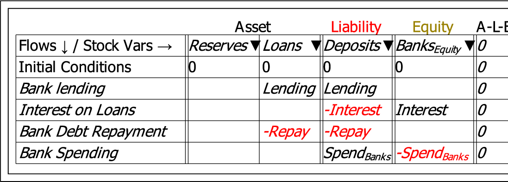

To insert a Godley Table into a model, click on the Godley icon  on the Operations bar. This attaches a Godley Table to your cursor. Click where you wish to place it on the canvas and this object will be inserted:
![\includegraphics[width=\textwidth]{images/GodleyTableIconMode}% WIDTH=550 HEIGHT=525](img210.png)
You can edit this object by either double-clicking on the icon, or by choosing ``Edit Godley Table'' from its context menu.